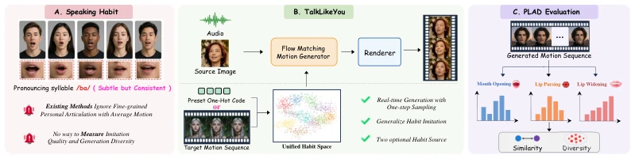
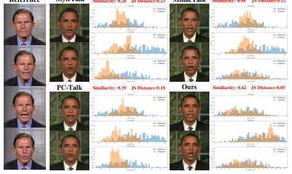
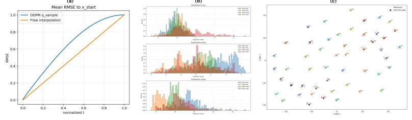
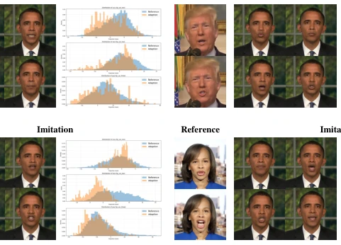
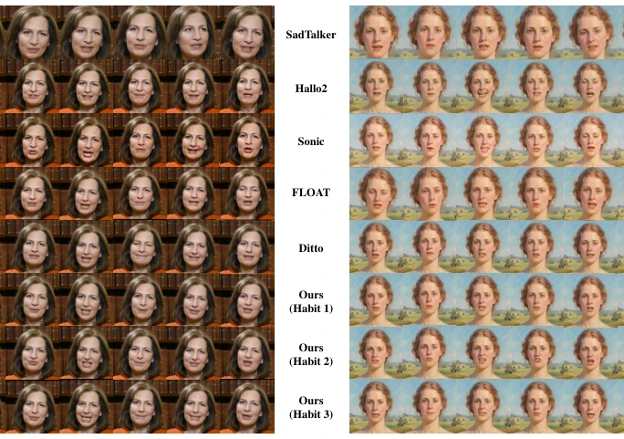
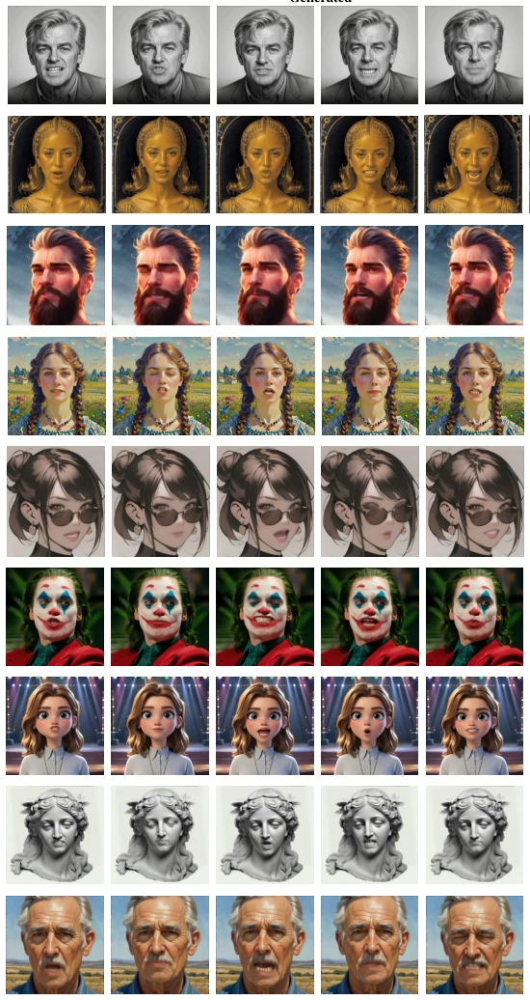

现有音频驱动 Talking Head 方法如 SadTalker (Zhang et al., 2023), Sonic (Ji et al., 2025) 等，虽在唇形同步和视觉保真度上表现优异，却普遍忽略了用户特定的说话习惯。这些习惯体现为细微且一致的唇部运动模式（如“bus”的张嘴幅度），是身份感知的关键。现有方法多依赖图像空间扩散，学习数据集的平均运动模式，导致生成结果缺乏多样性。MimicTalk (Ye et al., 2024) 虽尝试个性化，但需针对个体训练，泛化能力受限。PC-Talk (Wang et al., 2025b) 虽能生成风格化结果，但存在时间抖动。本文旨在解决这一痛点，实现无需重新训练即可模仿目标人物说话习惯的实时生成，填补了习惯感知生成的空白。
—

Figure 1: Overview of TalkLikeYou. Previous methods often generate uniform motions with lim- ited control over speaking habits. We propose TalkLikeYou for efficient habit imitation in talking head generation, together with a new metric PLAD to evaluate habit similarity and diversity.
Figure 2: Framework of TalkLikeYou. Our method first generates habit-aware motion using the Flow Matching Motion Generator with optional habit sources through one-step sampling, and then renders them into a video. We further adopt a two-stage habit imitation learning strategy for more generalized and stable habit imitation. In the unified habit space, ⋆denotes the one-hot habit code and • denotes reference-video samples. During the first training stage, we use an alignment loss between reference video features and their corresponding one-hot habit codes.
Figure 3: Comparison Results. We compare our method with advanced baselines under three selected speaking habits, showing better visual quality and lip synchronization. Please zoom in for details. Video results are provided in the supplementary material.

Figure 4: Habit Imitation Comparison with related methods.

Figure 7: (a) Comparison of generation tendency under DDPM and Flow Matching. (b) PLAD histograms of different methods. (c) t-SNE visualization of the unified habit space, where stars denote preset one-hot habit features and dots denote reference-based habit features.
其他图片Other Figures

Figure 8: More results on habit imitation.

Figure 9: More comparison on Lip Synchronization with other baselines.

Figure 10: More visualization results on stylize faces.